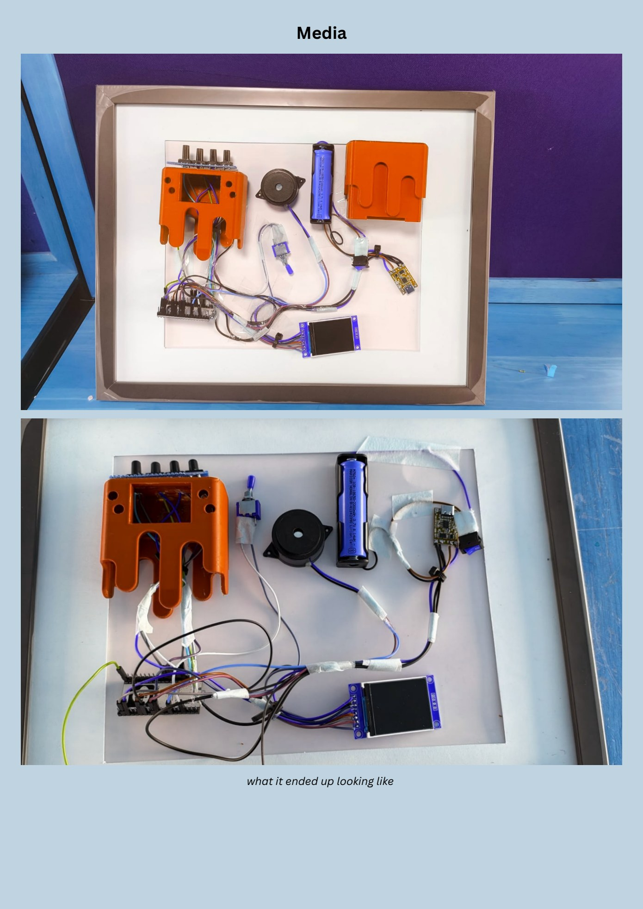
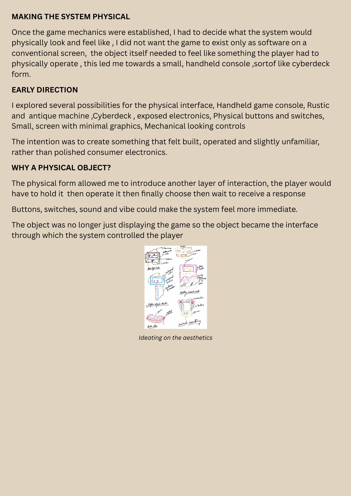
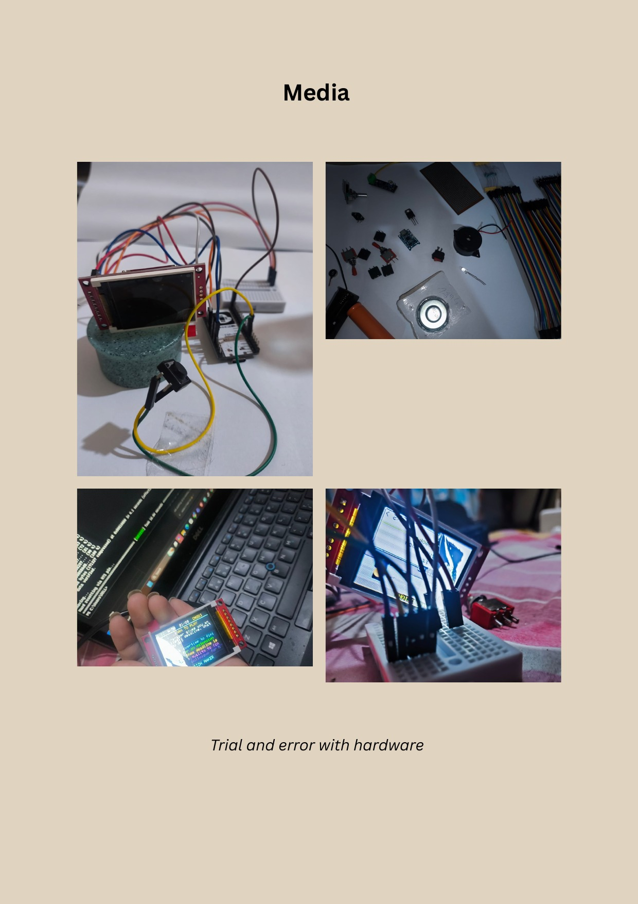
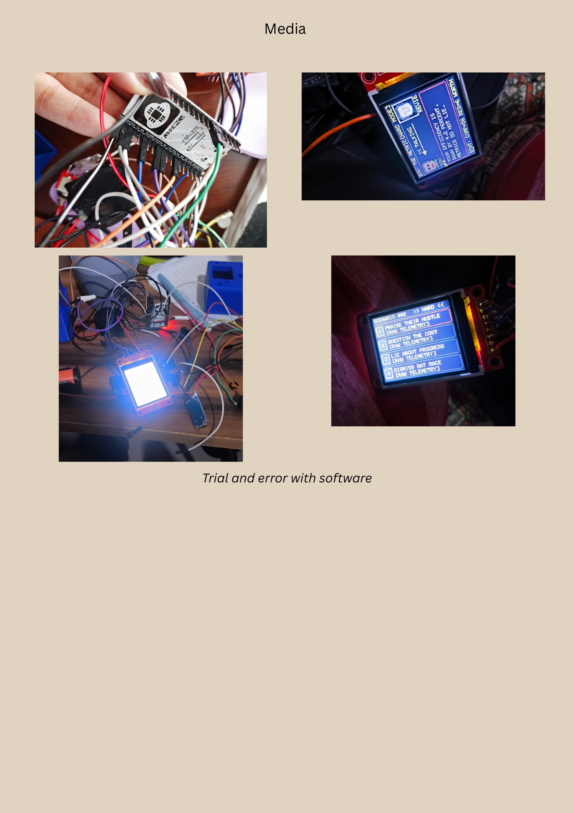
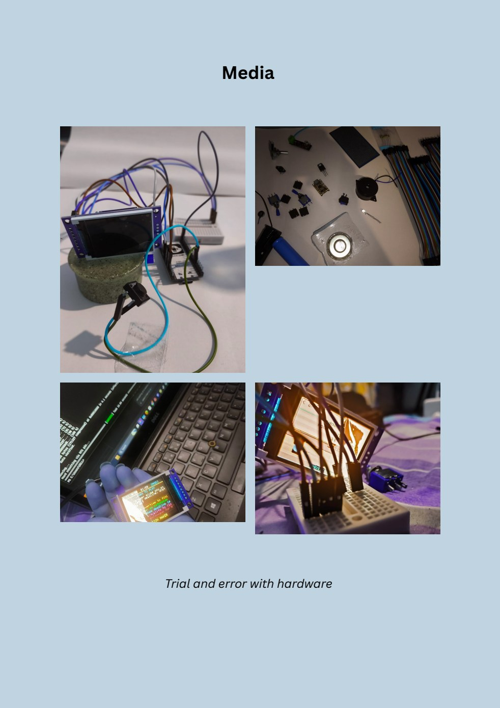
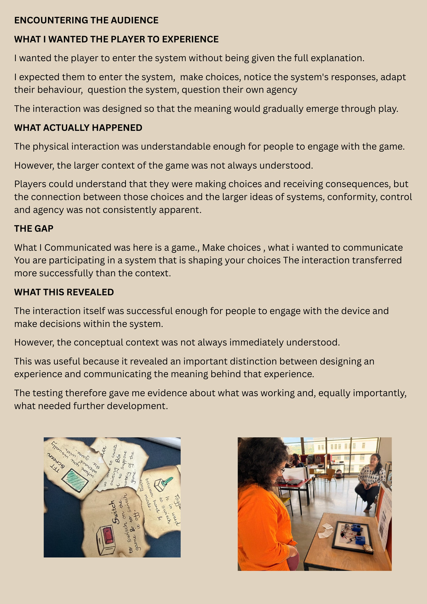
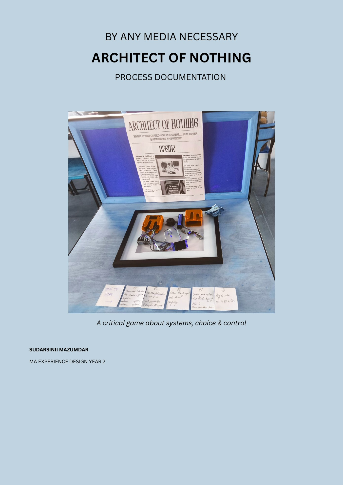

Philosophical Foundations: Luddism, Protocols & Agency
Modern digital platforms frequently claim to expand human autonomy by presenting users with endless choices, feeds, and customizable settings. Yet beneath this veneer of empowerment, software protocols quietly constrain and govern human behavior through invisible incentives, biometric tracking, and algorithmic conditioning.
Architect of Nothing began as an academic and critical inquiry into this hidden architecture of control. The project drew theoretical foundations from three seminal bodies of scholarship:
- Protocol Theory (Alexander Galloway): Galloway posits that in decentralized network architectures, control is not exerted through centralized force, but through protocols,standardized rules that govern how information, interactions, and participants may connect. Protocols disguise authority as technical necessity.
- Critical Making (Matt Ratto): The methodological practice of using physical electronics and material prototyping not merely to solve functional problems, but as an active mode of philosophical critique and reflective inquiry.
- The Luddite Movement (E.P. Thompson): Often misunderstood as primitive anti-technology panic, historical Luddism was an intentional political resistance against machinery that systematically stripped artisans of their labor autonomy, dignity, and economic self-determination.
How do modern socio-technical systems subtly manipulate individual autonomy and enforce psychological conformity under the guise of choice, efficiency, and progress?
Narrative Game Logic & Psychological Conditioning
To translate abstract protocol theory into an experiential reality, the project took the form of a physical handheld game console. Rather than an interactive essay or digital app, players are physically confronted with a dedicated device running an original branching narrative.
Players navigate a sequence of realistic workplace, social, and institutional moral dilemmas rendered on a miniature 1.8-inch TFT display:
- "Colleague requests credit for unearned work. Choice: [PRAISE THEIR HUSTLE] vs. [FLAG DISCREPANCY]."
- "Executive deadline approaching. Choice: [LIE ABOUT PROGRESS] vs. [ADMIT SYSTEM FAILURE]."
Unknown to the player at the start, the console's internal software logic quietly tracks implicit psychological metrics: compliance vs. defiance, risk tolerance, and deference to institutional authority. The game's narrative branches do not reward conventional morality; instead, the system gradually increases bureaucratic pressure, rewarding conformity and subtly penalizing individualist rebellion.

Physical Computing & Embedded C++ Engineering
Building the physical artifact required overcoming significant embedded hardware and software engineering constraints:
| Subsystem | Hardware Component | Technical Challenge | Engineered Resolution |
|---|---|---|---|
| Microcontroller | ESP32 NodeMCU | GPIO pin contention between SPI bus and input triggers | Mapped dedicated hardware SPI pins (MOSI, SCK, CS, DC, RESET) separate from button interrupts |
| Display | 1.8" ST7735 SPI TFT (128×160) | Text clipping; narrative choices exceeded line boundaries | Authored custom word-wrapping and line-scrolling algorithm in C++ |
| Audio Feedback | Piezo Buzzer | Standard delay() sound routines blocked button reading | Wrote non-blocking state-machine frequency toggles using millis() |
| Power Management | Rechargeable 3.7V LiPo + TP4056 | Brownouts and resets when transitioning from USB to battery | Integrated decoupling electrolytic capacitors across power rails |


The Honest Failure: Enclosure Clearance & Deconstruction
The original vision (Iteration 1) was an enclosed, handheld 3D-printed cyberdeck console. Complete CAD models were designed, sliced, and printed in blue PLA. However, physical assembly brought a catastrophic fabrication failure.
Why the Enclosed Case Failed: During final soldering and packing, the internal volume tolerance proved too tight. The thick gauge of jumper cables, battery pack dimensions, and tactile switch stems exceeded the cavity depth. Closing the printed clamshell caused wire pinches, broken solder joints, and battery bulging. With only days remaining before the academic public exhibition, there was no time to redesign and execute a 24-hour reprint.
Rather than conceding defeat, the failure was transformed into a defining conceptual pivot: Deconstruction.
The electronics were liberated from the hidden shell and mounted in an open, framed layout against archival matboard. The blue 3D-printed module, ESP32 board, exposed wiring harness, and battery were displayed inside a picture frame accompanied by handwritten parchment instructions. By exposing the raw electronic guts, the artifact literally laid bare the "machinery of control", turning a physical fabrication setback into a profound artistic asset.

Exhibition Playtesting & The Context Gap
The finished installation was exhibited publicly at the MA gallery showcase, where dozens of visitors engaged in live playtesting.


The Critical Evaluation Finding
Observational testing yielded a profound, unexpected insight regarding critical experience design:
"Critical ideas do not automatically translate into critical experiences; internal game mechanics alone cannot carry the full conceptual context without intentional framing and visual language." Empirical Playtesting Observation
While visitors effortlessly understood the physical buttons and enjoyed the branching narrative, many interpreted it simply as a fun retro handheld game. Without reading the surrounding curatorial parchment, they missed the deeper critique of Alexander Galloway's protocol theory. Designing a system of control revealed the immense gulf between the designer’s internal theoretical intent and the user’s unprompted perception.
Limitations & Documented Gaps
- Handheld Enclosure: [PHYSICAL CASING UNENCLOSED] The artifact remains mounted in its framed deconstructed state rather than a fully enclosed injection-molded or handheld casing.
- Branching Tree Script: [FULL NARRATIVE TREE SCRIPT NOT INCLUDED] The complete multi-branch text matrix and psychological scoring weights programmed into the firmware are only partially transcribed in the academic PDF.
Retrospective & Product Management Signals
Architect of Nothing serves as an unmistakable demonstration of engineering grit, intellectual maturity, and adaptive execution:
- Full-Stack Physical Computing: Authored custom embedded C++ code, designed circuits, managed power delivery, and built hardware from scratch.
- Adaptive Problem Solving Under Pressure: Successfully salvaged a severe fabrication failure hours before an exhibition, turning a defect into the installation's core aesthetic signature.
- Ethical Responsibility in System Architecture: Shifted from passively critiquing systems to taking direct moral responsibility as the architect who designs the conditions of user choice.